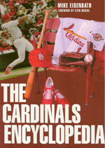

<body bgcolor="#FFFFFF" text="#000000" link="#0000FF" vlink="#CC0000" alink="#CC0000"><center><hr width="350" size="1" align="center" noshade>Photos, memorabilia, and the most comprehensive and detailed account of Redbird baseball history<hr width="350" size="1" align="center" noshade><p><a href="https://cdcshoppingcart.uchicago.edu/Cart/ChicagoBook.aspx?ISBN=9781566397032&&PRESS=temple" target="_top">Buy this book!</a> | <a href="https://cdcshoppingcart.uchicago.edu/Cart/Cart.aspx?PRESS=temple" target="_top">View Cart</a> | <a href="https://cdcshoppingcart.uchicago.edu/Cart/Cart.aspx?PRESS=temple" target="_top">Check Out</a></p><p></p></center><!--none//--><h1>The Cardinals Encyclopedia</h1>
<H2><!-- Foreword by Stan Musial --></H2>
<h3>Michael Eisenbath, foreword by Stan Musial</h3>
<P>cloth 1-56639-703-0 $75.50, Jun 00, <FONT COLOR=#990033>Available</FONT>
<BR> 652 pp
9x12
</P><BLOCKQUOTE><I>"Baseball fans everywhere, and especially those of you who have supported Cardinal baseball through the years, will be delighted by</I> The Cardinals Encyclopedia. <I>This book is one of the most comprehensive and best-researched chronicles of St. Louis Cardinals history ever printed&#151and it's exciting to read."</I>
<BR>&#151<B>Stan Musial</B>, from the Foreword<I></I></BLOCKQUOTE>
<p>In a front-page story on September 9, 1998, the <i>St. Louis Post-Dispatch</i> reported Cardinal baseball player Mark McGwire's 62nd home run&#151the run that broke Roger Maris's longstanding record of 61 homers in a single season. Legend has it that the paper went back to press twice that day to meet consumer demand, selling over one million copies to fair-weather friends, curious readers of the general public, and always-true Cardinal baseball fans.
<p>In <i>The Cardinals Encyclopedia</i>, Mike Eisenbath, seasoned sports writer for the <i>Post-Dispatch</i>, offers his carefully researched collection of Cardinal baseball lore to those loyal Redbird followers. Long in the writing before McGwire's heroic plays, <i>The Cardinals Encyclopedia</i> includes extensive profiles for the top 200 players and a synopsis of the careers of every team player ever to suit up, stories, statistics, and game-by-game accounts of every season (from the teams true beginning in 1882 as the St. Louis Browns), and detailed information on every manager. Complete with photos and memorabilia, this book uniquely captures the history behind the team that has not only inspired one of the most devoted fan bases in baseball history, is known for such colorful characters as the Gashouse Gang, has made fifteen World Series appearances, won nine World Championships, and sent to the Baseball Hall of Fame such stars as Stan Musial, Enos Slaughter, Bob Gibson, Dizzy Dean, and Red Schoendienst.
<p>Including a look at the 1998 season and a full chapter on Big Mac and his record-breaking plays by the sports writer assigned to cover his every move, <i>The Cardinals Encyclopedia</i>&#151covering everything from stories, statistics, team milestones, strategists, ballparks, the front office, and trades&#151brings to life all of the thrilling moments and special characters that have shaped the franchise's rich baseball tradition.
<BR>&nbsp;<h2>Excerpt</h2><P>Excerpt available at <a href="http://www.temple.edu/tempress">www.temple.edu/tempress</a></p>
<BR>&nbsp;<h2>Reviews</h2>
<P><I>"Anyone who is a Cardinals fan has to have this book. And if you're not a Cardinals fan, after you read this book, you will be."</I>
<br>&#151<b>Mike Shannon</b>, Cardinals broadcaster (KMOX) and former player
<BR>&nbsp;<h2>Contents</h2><P>
<P>Foreword
<br>Introduction
<br>1. Down Through the Seasons
<br>2. Player Profiles
<br>3. All the Team's Men
<br>4. The Strategists
<br>5. The Front Office
<br>6. The Ballparks
<br>7. The Hall of Famers
<br>8. The Postseason
<br>9. Trades, Acquisitions, and Sales
<br>10. Milestones, Honors, and Other Facts
<br>11. Big Mac: The McGwire Years, 1997-98
<br>12. Sources
<br>Acknowledgments
<br>About the Author
</P><BR>&nbsp;<H2>About the Author(s)</H2>
<P><B>Michael Eisenbath</B> is a baseball writer for the <i>St. Louis Post-Dispatch</i>, who, in the now legendary 1998 season, was assigned to follow Mark McGwire's every move.</P>
<BR><H2>Subject Categories</H2>
<p><A HREF="/tempress/sports.html" TARGET="_top">Sports</a>
<BR><A HREF="/tempress/general.html" TARGET="_top">General Interest</a>
</p>
<BR><h2 class="inpageheading">In the series</H2>
<P><I><a href="http://www.temple.edu/tempress/encyclo.html" onMouseOver="window.status='Click for other books in this series!'; return true;" onMouseOut="window.status=''; return true;" target="_top">Baseball Encyclopedias of North America</a></i>, edited by Rich Westcott.
</p><p>The purpose of <i>Baseball Encyclopedias of North America</I>, edited by Rich Westcott, is to examine each of the clubs in big league baseball in an encyclopedic format. That is, to provide baseball fans a place to go to find information on a particular team organized in such a fashion that is available nowhere else. The series editor aims to concentrate on the 16 original teams of both leagues and publish each book as he is able to find the right person to do it. The books will all be unique because of their emphasis on three major components: 1) short, straight forward prose accounts of all aspects of the team including seasons, players, stadiums and front office people, 2) listings and statistics of all players of the team, and 3) heavy illustrations. These books can be read cover to cover or used as reference materials.</p>
<p align="center"><a href="https://cdcshoppingcart.uchicago.edu/Cart/ChicagoBook.aspx?ISBN=9781566397032&&PRESS=temple" target="_top">Buy this book!</a> | <a href="https://cdcshoppingcart.uchicago.edu/Cart/Cart.aspx?PRESS=temple" target="_top">View Cart</a> | <a href="https://cdcshoppingcart.uchicago.edu/Cart/Cart.aspx?PRESS=temple" target="_top">Check Out</a></p><p><font face="Arial" size="1"><a href="copyright.html" onMouseOver="window.status='Web Copyright Policy';return true;" onMouseOut="window.status=''" title="Web Copyright Policy">&copy;</a> 2015 <a href="http://www.temple.edu" target="new" onMouseOver="window.status='Link to Temple University home page';return true;" onMouseOut="window.status=''" title="Link to Temple University home page">Temple University</a>. All Rights Reserved. http://www.temple.edu/tempress/titles/1294_reg.html</font></p>